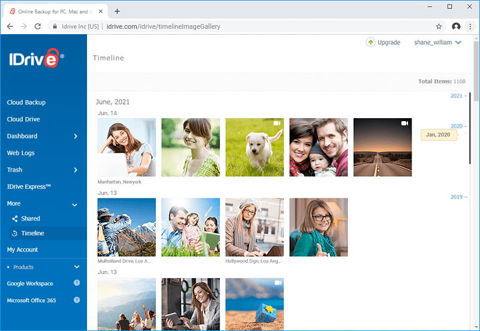
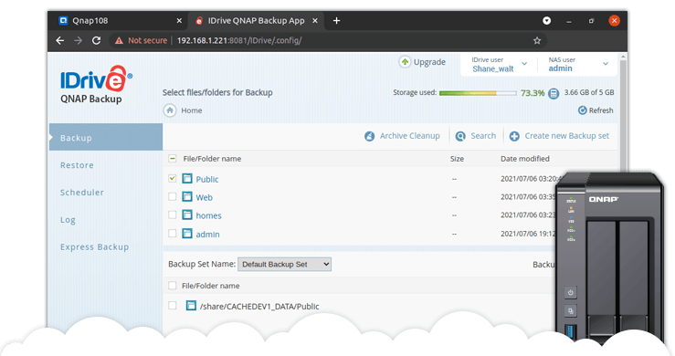

iDrive: Copias de seguridad confiables y soluciones de recuperación ante desastres para datos críticos.


Con su sistema de almacenamiento en la nube, iDrive permite realizar copias de seguridad automáticas y acceder a los datos desde cualquier dispositivo en cualquier momento.
Gracias a iDrive, las empresas pueden minimizar la pérdida de datos, garantizar la continuidad del negocio y recuperar archivos en caso de incidentes.
Descargar más información
Accede a documentación detallada sobre Outkept y sus beneficios en ciberseguridad.